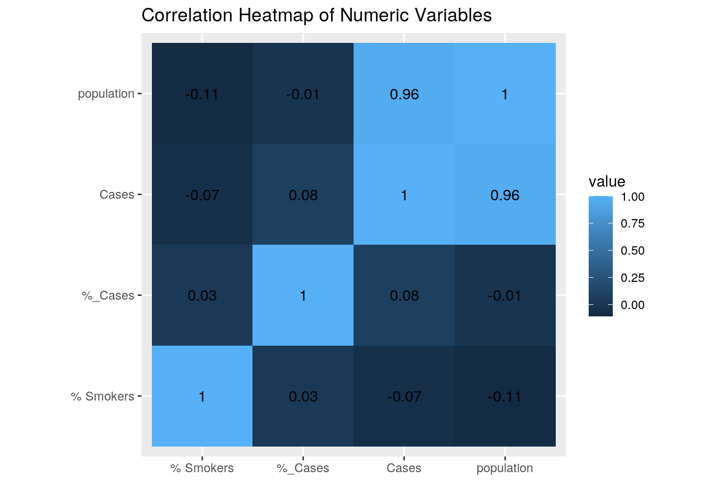
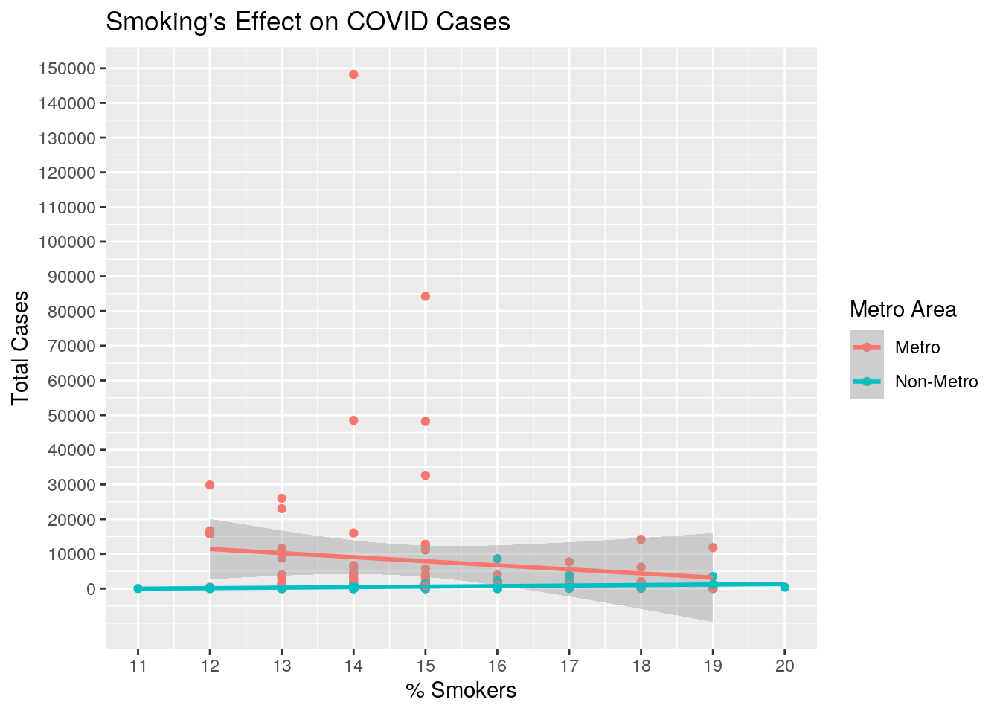
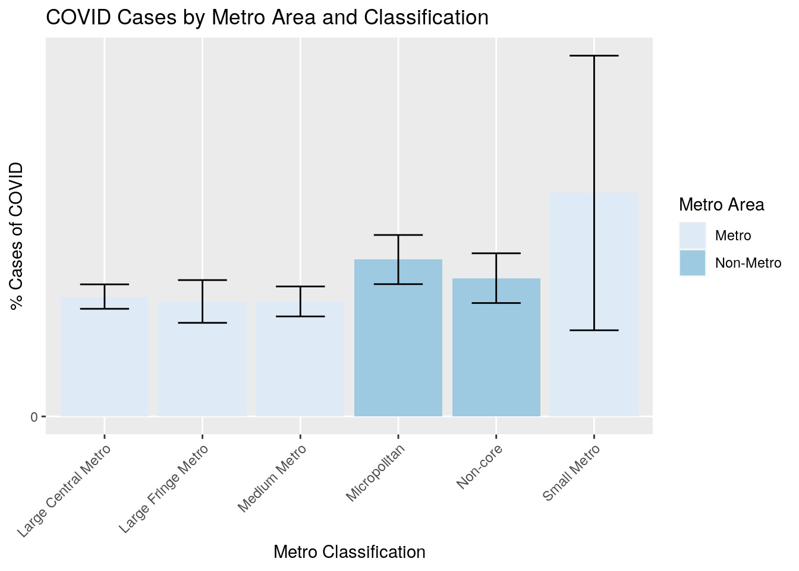
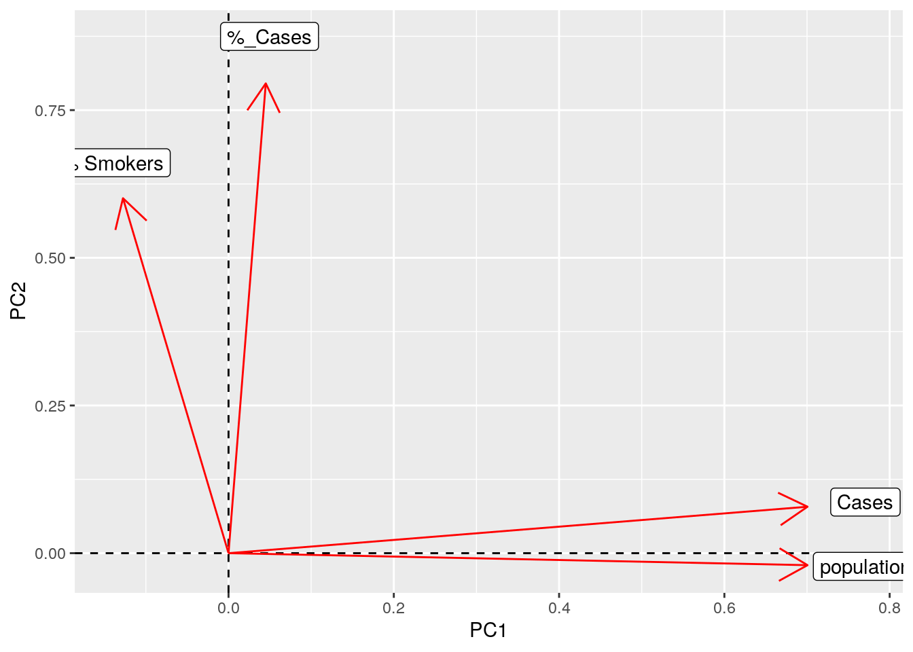
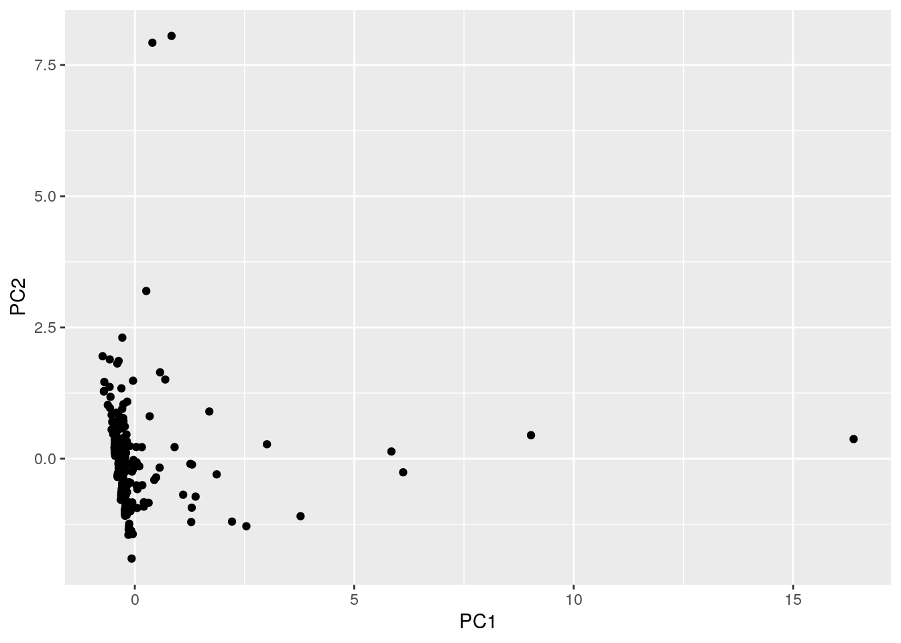

library(ggplot2)
library(ggrepel)
library(tidyr)
library(tidyverse)
library(dplyr)county_pop <- read.csv("covid_county_population_usafacts.csv",
header = TRUE)
cases_fatalities <- read.csv("Cases and Fatalities.csv",
header = TRUE)
county_health <- read.csv("2020 County Health Rankings Texas Data - v1_0 (1).csv",
header = TRUE)
county_class <- read.csv("PHR_MSA_County_masterlist.csv",
header = TRUE)Introduction: I have chosen to upload four datasets with information about each of Texas' counties. This information includes population size, county ID's, classification, health statistics like the percent of those in each county who smoke and who have diabeties, and finally, the number of people infected with COVID in each county since March 2020. These datasets were obtained from various sources including the CDC, www.countyhealthrankings.org and dshs.texas.gov. This information was of particular interest to me given the current pandemic while considering that I have had family who have directly procured the virus. Thus, I was motivated to see the virus' effects in the State of Texas. In particular, I will be comparing the effects of COVID between counties of different populations and classes while also looking at whether smoking has any affect on the cases of COVID. I predict that non-metropolitan counties will have less cases of COVID that metropolitans and that the cases of COVID will go up as the population does. I also suspect that counties with higher cases of smoking will also have higher cases of COVID.
cases_fate <- cases_fatalities %>% pivot_wider(names_from = "Statistic",
values_from = "Value")After I uploaded the files, I had to tidy the dataset cases_fatalities. Originally, the dataset had all the number of cases of COVID and fatalities in one column with the classification in another. Using pivot_wider, I rearranged the data so that all of the values for the cases of COVID would be in one column and all the values of the fatalities of COVID would be in another column.
tex_pop <- county_pop %>% filter(State == "TX")
halfdata <- tex_pop %>% full_join(county_health, by = c(County.Name = "County"))
nextdata <- halfdata %>% full_join(county_class, by = c(County.Name = "County.Name"))
fulldata <- nextdata %>% full_join(cases_fate, by = c(County.Name = "County"))
fulldata <- fulldata %>% na.omit()
fulldata <- fulldata %>% select(-FIPS)
fulldata <- fulldata %>% select(-Fatalities)
fulldata <- fulldata %>% select(-State.y, -State.x,
-"X..Adults.with.Obesity", -"countyFIPS")
fulldata <- fulldata %>% rename(`County Name` = County.Name,
`% Smokers` = X..Smokers, `Metro Area` = Metro.Area,
`NCHS Urban Rural Classification (2013)` = NCHS.Urban.Rural.Classification..2013.)The next part of my analysis was to join the four datasets together which all contained 254 observations for each county in Texas. The first step was to remove all the county information from states that were not Texas from county_pop. Once this once done, I used full_join to join all the datasets on the bases of county names so that I could retain all of the information from each of the datasets. I then removed NA's which only removed one row that was allocated for information pertaining to people that did not fit into a county. I then removed some unecessary information from the dataset including the county's ID's (FIPS number) and which state the county was in since they were all from Texas. I also removed the total number of fatalities of COVID from each county and the percent of people in each county with obesity. I decided to remove the former column because there was less variation from those dying of COVID compared to those contracting COVID which might make it hard to measure any meanigful effects on death rates. I removed the latter column so that I could focus on the effects of smoking on COVID rather than diabeties since COVID attacks the lungs. Removing this information does come with some disadvantages. For example, I will not be able to see the effects on mortalilty of COVID in each county due to smoking , population, or county classification. I will also miss out on the opportunity to see if diabeties has any effect on COVID. Finally, I renamed some of my columns to make them easier to understand.
fulldata %>% summarize(mean_cases = mean(Cases), sd_cases = sd(Cases),
min_cases = min(Cases), median_cases = median(Cases),
max_cases = max(Cases))## mean_cases sd_cases min_cases median_cases max_cases
## 1 3045.02 12080.06 0 380 148235fulldata %>% group_by(`Metro Area`) %>% summarize(mean_cases = mean(Cases),
sd_cases = sd(Cases), min_cases = min(Cases), median_cases = median(Cases),
max_cases = max(Cases))## # A tibble: 2 x 6
## `Metro Area` mean_cases sd_cases min_cases median_cases max_cases
## <fct> <dbl> <dbl> <int> <dbl> <int>
## 1 Metro 8226. 20306. 12 1864 148235
## 2 Non-Metro 575. 1259. 0 248 12508fulldata %>% summarize(mean_population = mean(population),
sd_cases = sd(Cases))## mean_population sd_cases
## 1 114157 12080.06fulldata %>% group_by(`Metro Area`) %>% summarize(mean_population = mean(population),
sd_cases = sd(Cases))## # A tibble: 2 x 3
## `Metro Area` mean_population sd_cases
## <fct> <dbl> <dbl>
## 1 Metro 316105. 20306.
## 2 Non-Metro 17879. 1259.fulldata %>% summarize(`mean_%_smokers` = mean(`% Smokers`),
`sd_%_smokers` = sd(`% Smokers`))## mean_%_smokers sd_%_smokers
## 1 14.96063 1.580021fulldata %>% group_by(`Metro Area`) %>% summarize(`mean_%_smokers` = mean(`% Smokers`),
`sd_%_cases` = sd(`% Smokers`))## # A tibble: 2 x 3
## `Metro Area` `mean_%_smokers` `sd_%_cases`
## <fct> <dbl> <dbl>
## 1 Metro 14.7 1.62
## 2 Non-Metro 15.1 1.55fulldata %>% group_by(`Metro Area`, `NCHS Urban Rural Classification (2013)`) %>%
summarize(mean_cases = mean(Cases))## # A tibble: 6 x 3
## # Groups: Metro Area [2]
## `Metro Area` `NCHS Urban Rural Classification (2013)` mean_cases
## <fct> <fct> <dbl>
## 1 Metro Large Central Metro 62454.
## 2 Metro Large Fringe Metro 4306.
## 3 Metro Medium Metro 5380.
## 4 Metro Small Metro 1838.
## 5 Non-Metro Micropolitan 1172.
## 6 Non-Metro Non-core 357.fulldata <- fulldata %>% mutate(`%_Cases` = (Cases/population) *
100)
fulldata %>% group_by(`Metro Area`) %>% summarize(`mean_cases_%` = mean(`%_Cases`))## # A tibble: 2 x 2
## `Metro Area` `mean_cases_%`
## <fct> <dbl>
## 1 Metro 3.00
## 2 Non-Metro 2.97fulldata %>% select(`County Name`, `Metro Area`, `NCHS Urban Rural Classification (2013)`,
Cases) %>% filter(Cases == 0)## County Name Metro Area NCHS Urban Rural Classification (2013) Cases
## 1 King County Non-Metro Non-core 0
## 2 Loving County Non-Metro Non-core 0fulldata %>% select(`%_Cases`, `County Name`, `Metro Area`) %>%
arrange(desc(`%_Cases`))## %_Cases County Name Metro Area
## 1 64.321608 Martin County Metro
## 2 62.043651 DeWitt County Non-Metro
## 3 23.423300 Matagorda County Non-Metro
## 4 17.201276 Delta County Non-Metro
## 5 14.083516 Ellis County Metro
## 6 10.726608 Marion County Non-Metro
## 7 10.632571 McMullen County Non-Metro
## 8 10.028698 Lamb County Non-Metro
## 9 9.180862 McCulloch County Non-Metro
## 10 6.063714 Karnes County Non-Metro
## 11 5.807340 Hale County Non-Metro
## 12 5.711557 Moore County Non-Metro
## 13 5.670007 Willacy County Non-Metro
## 14 5.650238 Bee County Non-Metro
## 15 5.569934 Deaf Smith County Non-Metro
## 16 5.442111 Cameron County Metro
## 17 5.354850 Starr County Non-Metro
## 18 5.270195 Potter County Metro
## 19 5.233586 Walker County Non-Metro
## 20 5.170190 Lavaca County Non-Metro
## 21 5.135096 Gonzales County Non-Metro
## 22 5.116898 Webb County Metro
## 23 5.062362 Concho County Non-Metro
## 24 4.912098 Anderson County Non-Metro
## 25 4.904954 Frio County Non-Metro
## 26 4.763279 Crockett County Non-Metro
## 27 4.638376 Brooks County Non-Metro
## 28 4.633004 Parmer County Non-Metro
## 29 4.627911 Scurry County Non-Metro
## 30 4.613972 Val Verde County Non-Metro
## 31 4.549618 Titus County Non-Metro
## 32 4.461716 Refugio County Non-Metro
## 33 4.461144 Victoria County Metro
## [ reached 'max' / getOption("max.print") -- omitted 221 rows ]For the next part of my analysis, I ran various lines of code to get summary statistics for my data. I first set out on finding some basic summary statistics for each of my numeric variables including the cases of COVID, the population size, and the percent of those who smoke before and after grouping by 'Metro Area'. For cases, grouping revealed that Metro areas generally have higher cases of COVID and experience more variation compared to Non-Metro counties. For population, grouping revealed that Metro counties have higher populations and more variation as well. Finally, grouping revealed that Metro counties have higher variation for % smokers but a lower average of % smokers compared to Non-Metro areas which was an unexpected results. These comparisons would not have been possible had I not grouped by 'Metro Area'.
I then calculated some additional statistics for the dataset. The first statistic involves grouping by 'Metro Area' and 'NCHS Urban Rural Classification (2013)' to find the mean cases for the counties. Grouping by both varaibles shows that Large Central Metro counties have the highest average cases of COVID of all the Metro areas whereas Micropolitan counties have the highest average cases of the Non-Metro Areas. I also found that the impact of COVID between Metro and Non-Metro areas are actually quite similar by looking at the mean percent of cases in county which factors in the population of each county. 3.00% of the population in Metro counties have gotten COVID which is not very different from the 2.97% in Non-Metro counties. I also found that only two counties, which are both Non-Metro and Non-core, have had zero cases of COVID and that the county which has the most cases of COVID is Martin County which happens to be a Metro county.
fulldata %>% select_if(is.numeric) %>% cor()## population % Smokers Cases %_Cases
## population 1.00000000 -0.10687865 0.95927983 -0.01483242
## % Smokers -0.10687865 1.00000000 -0.07302580 0.02548842
## Cases 0.95927983 -0.07302580 1.00000000 0.08240709
## %_Cases -0.01483242 0.02548842 0.08240709 1.00000000fulldata %>% select_if(is.numeric) %>% cor %>% as.data.frame %>%
rownames_to_column %>% pivot_longer(-1) %>% ggplot(aes(rowname,
name, fill = value)) + geom_tile() + geom_text(aes(label = round(value,
2))) + xlab("") + ylab("") + coord_fixed() + ggtitle("Correlation Heatmap of Numeric Variables") The next part of my analysis was to see if there was any correlation between my numeric variables including the cases of COVID, the population size, the percent of those who smoke, and the new variable which is the % cases of COVID for each county. Based on the table and the heat map, the population of a county and the number of COVID cases for that county were the only two numeric varaibles with a strong correlation. This was not a surprise to me but I also had to conclude that smoking does not affect the total cases or the % cases of COVID which was unexpected.
ggplot(data = fulldata, aes(x = `% Smokers`, y = Cases,
color = `Metro Area`)) + geom_point() + ggtitle("Smoking's Effect on COVID Cases") +
ylab("Total Cases") + xlab("% Smokers") + geom_smooth(method = "lm") +
scale_x_continuous(breaks = seq(0, 20, 1)) + scale_y_continuous(breaks = seq(0,
150000, 10000)) This graph is another confirmation of my earlier conclusion. The percent of the population of smokers for the counties is plotted on the x-axis and the total cases of COVID is plotted on the y-axis. Since the trendline lines are nearly horizontal, I can conclude that there is practically no relation between smoking and contracting COVID which goes against my predicted results.
ggplot(data = fulldata, aes(x = `NCHS Urban Rural Classification (2013)`,
y = `%_Cases`)) + geom_bar(stat = "summary", fun = mean,
aes(fill = `Metro Area`)) + scale_fill_brewer() +
scale_y_continuous(breaks = seq(0, 150, 25)) +
ggtitle("COVID Cases by Metro Area and Classification") +
ylab("% Cases of COVID") + xlab("Metro Classification") +
geom_errorbar(stat = "summary", fun.data = mean_se,
width = 0.5) + theme(axis.text.x = element_text(angle = 45,
hjust = 1)) This graph shows the effects of the different categorical variables on the percent cases of covid for Texas counties. Based on the graph, there is not much of a difference between between Metro and Non-Metro areas in % Cases of COVID which was the same conclusion we reached earlier. However we are able to reach another conclusion based on this graph since Small Metro counties, which are part of Metro counties, seems to be the classification of counties with the highest % cases of COVID. This category also has the most variation of % cases compared to the other classifications.
full_pca <- fulldata %>% select_if(is.numeric) %>%
scale() %>% prcomp()
summary(full_pca)## Importance of components:
## PC1 PC2 PC3 PC4
## Standard deviation 1.4064 1.0138 0.9793 0.18791
## Proportion of Variance 0.4945 0.2570 0.2398 0.00883
## Cumulative Proportion 0.4945 0.7514 0.9912 1.00000fulldata %>% select_if(is.numeric) %>% cor() %>% eigen()## eigen() decomposition
## $values
## [1] 1.97785261 1.02778650 0.95904926 0.03531164
##
## $vectors
## [,1] [,2] [,3] [,4]
## [1,] 0.70057525 -0.02029753 -0.10847435 0.70499336
## [2,] -0.12771832 0.60083615 -0.78877231 0.02285159
## [3,] 0.70060653 0.07865048 -0.07396584 -0.70533229
## [4,] 0.04508694 0.79523458 0.60050030 0.07048773full_pca$rotation[, 1:2] %>% as.data.frame %>% rownames_to_column %>%
ggplot() + geom_hline(aes(yintercept = 0), lty = 2) +
geom_vline(aes(xintercept = 0), lty = 2) + ylab("PC2") +
xlab("PC1") + geom_segment(aes(x = 0, y = 0, xend = PC1,
yend = PC2), arrow = arrow(), col = "red") + geom_label(aes(x = PC1 *
1.1, y = PC2 * 1.1, label = rowname))
full_pca$x %>% as.data.frame %>% mutate(State = fulldata$`County Name`) %>%
ggplot(aes(PC1, PC2)) + geom_point() Finally, the last part of my analysis involves doing a PCA on my data. The first step was to select the columns of my data that were numeric before doing a PCA. After the analysis, I concluded that I would keep the first three principle components since they accounted for 99.12% of the variation cumulatively in the dataset whereas the first two components only account for 75.14% of the variation cumulatively which is below 80%. I also concluded that PC1 accounts for 49.45% of the variation in the data set and the second accounts for 25.70%. Both are not very good which is why PC3 is needed. Finally, I was able to conclude from the first plot that PC2 does a good job of explaining % cases and % smokers since the angles between these variable and the y-axis is small whereas PC1 does a good job of explaining total cases and population since the angles between these variable and the x-axis is small. The angle between cases and population was also small which indicates a higher relationship, just as I had concluded earlier.
## R version 3.6.1 (2019-07-05)
## Platform: x86_64-pc-linux-gnu (64-bit)
## Running under: Ubuntu 18.04.5 LTS
##
## Matrix products: default
## BLAS: /stor/system/opt/R/R-3.6.1/lib/R/lib/libRblas.so
## LAPACK: /stor/system/opt/R/R-3.6.1/lib/R/lib/libRlapack.so
##
## locale:
## [1] LC_CTYPE=en_US.UTF-8 LC_NUMERIC=C
## [3] LC_TIME=en_US.UTF-8 LC_COLLATE=en_US.UTF-8
## [5] LC_MONETARY=en_US.UTF-8 LC_MESSAGES=en_US.UTF-8
## [7] LC_PAPER=en_US.UTF-8 LC_NAME=C
## [9] LC_ADDRESS=C LC_TELEPHONE=C
## [11] LC_MEASUREMENT=en_US.UTF-8 LC_IDENTIFICATION=C
##
## attached base packages:
## [1] stats graphics grDevices utils datasets methods base
##
## other attached packages:
## [1] forcats_0.5.0 stringr_1.4.0 dplyr_1.0.1 purrr_0.3.4
## [5] readr_1.3.1 tibble_3.0.3 tidyverse_1.3.0 tidyr_1.1.1
## [9] ggrepel_0.8.2 ggplot2_3.3.2
##
## loaded via a namespace (and not attached):
## [1] tidyselect_1.1.0 xfun_0.16 lattice_0.20-41 splines_3.6.1
## [5] haven_2.3.1 colorspace_1.4-1 vctrs_0.3.2 generics_0.0.2
## [9] htmltools_0.5.0 mgcv_1.8-31 yaml_2.2.1 utf8_1.1.4
## [13] blob_1.2.1 rlang_0.4.7 pillar_1.4.6 glue_1.4.2
## [17] withr_2.2.0 DBI_1.1.0 RColorBrewer_1.1-2 dbplyr_1.4.4
## [21] modelr_0.1.8 readxl_1.3.1 lifecycle_0.2.0 munsell_0.5.0
## [25] blogdown_0.20 gtable_0.3.0 cellranger_1.1.0 rvest_0.3.6
## [29] evaluate_0.14 labeling_0.3 knitr_1.29 fansi_0.4.1
## [33] broom_0.7.0 Rcpp_1.0.5 backports_1.1.8 scales_1.1.1
## [37] formatR_1.7 jsonlite_1.7.0 farver_2.0.3 fs_1.5.0
## [41] hms_0.5.3 digest_0.6.25 stringi_1.5.3 bookdown_0.20
## [45] grid_3.6.1 cli_2.0.2 tools_3.6.1 magrittr_1.5
## [49] crayon_1.3.4 pkgconfig_2.0.3 Matrix_1.2-17 ellipsis_0.3.1
## [53] xml2_1.3.2 reprex_0.3.0 lubridate_1.7.9 assertthat_0.2.1
## [57] rmarkdown_2.3 httr_1.4.2 rstudioapi_0.11 R6_2.4.1
## [61] nlme_3.1-148 compiler_3.6.1## [1] "2020-12-11 14:12:59 CST"## sysname
## "Linux"
## release
## "4.15.0-117-generic"
## version
## "#118-Ubuntu SMP Fri Sep 4 20:02:41 UTC 2020"
## nodename
## "educcomp04.ccbb.utexas.edu"
## machine
## "x86_64"
## login
## "unknown"
## user
## "jj35362"
## effective_user
## "jj35362"